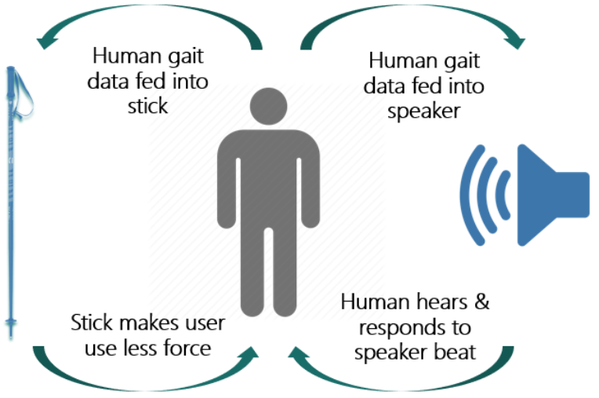
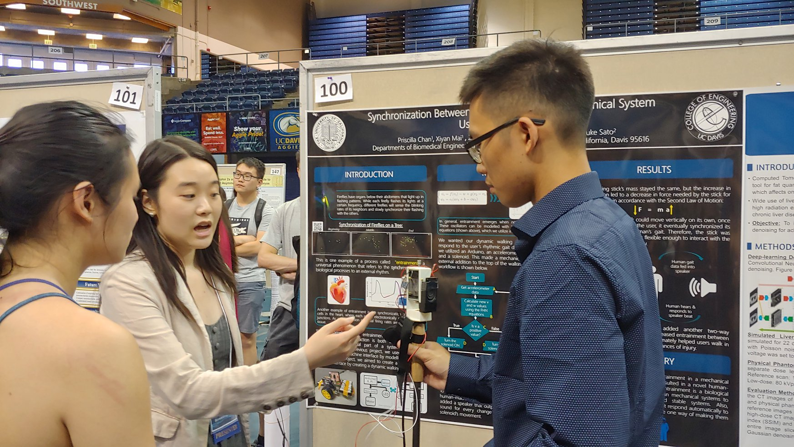
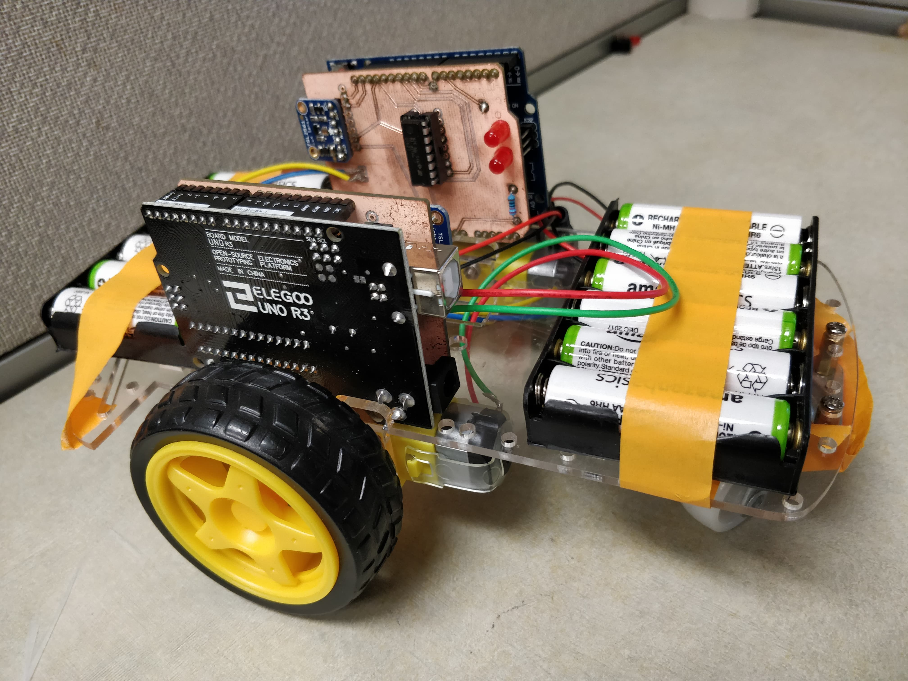
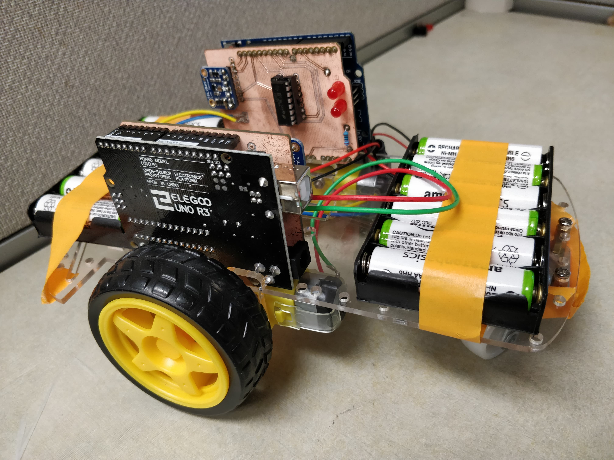
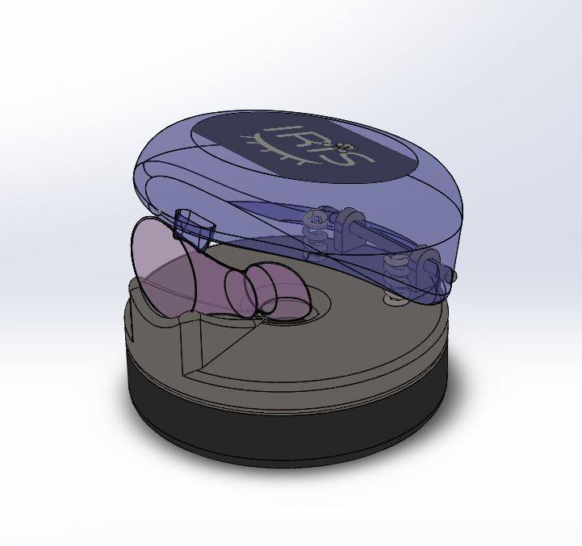
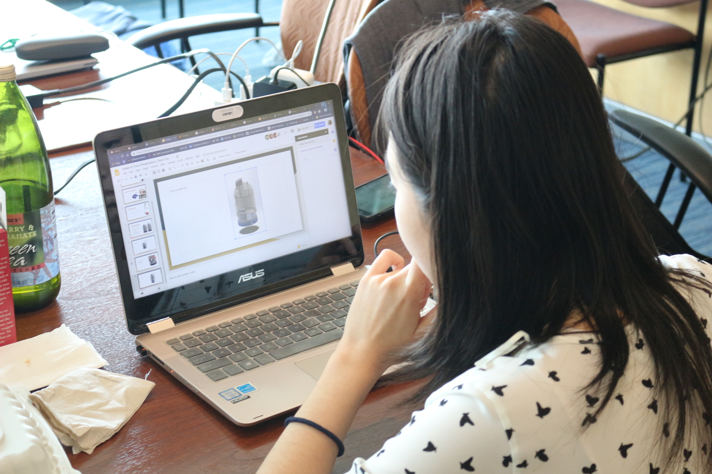
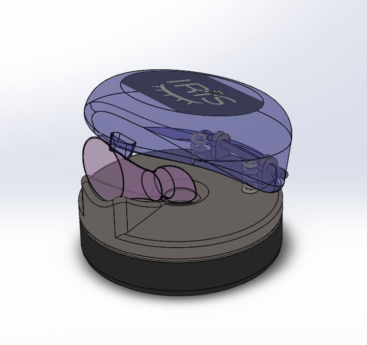
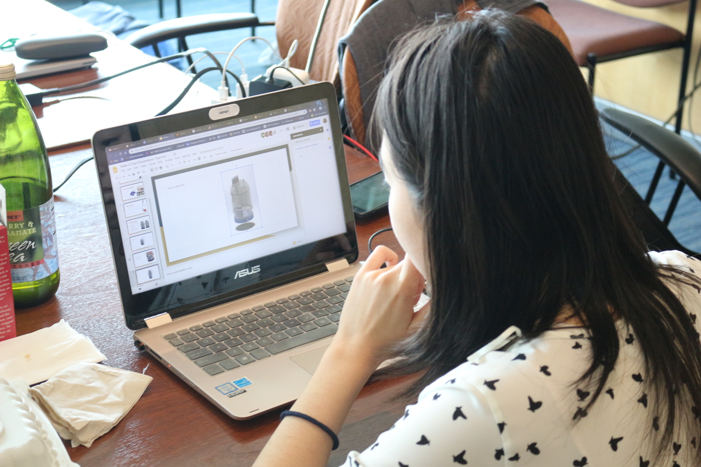

Priscilla Chan
I am a recent graduate from UC Davis who majored in Biomedical Engineering and specialized in Medical Devices. I am interested in coming up with solutions to health issues through the use of programming and circuitry. During my time at UC Davis, most of my software experience was related to programming circuit components in a research lab. Aside from taking programming classes in MATLAB, C, and C++, I learned more about software through two software-related internship positions that let me explore different medical technology.
My first internship was at Varian Medical Systems in Palo Alto, California, as a Software Engineering Intern. I was able to learn about how to apply my programming skills in the industry setting as a software developer, and also how to perform software verification testing on medical devices. My work at the company also contributed towards improving their on-market TrueBeam device, a linear accelerator used to treat cancer patients. The internship sparked my enthusiasm to work in medical-related software, so I returned to school and took a Data Strutures, Algorithms, and Programming course during my senior year at UC Davis. I also worked with my senior design team to collaborate with Varian on an Augmented Reality (AR) project to improve clinical workflow for radiation therapists.
Since I have graduated, I am currently doing another internship postion at Roche Sequencing Solutions in Pleasanton, California, as a Bioinformatics Intern. This time, my work focuses on using programming to make an automated unit test and regression test for bioinformatics pipeline development, which has potential to determine the risk of cancer in patients. Although much different from my last internship, I am enthusiastic about the fact that both of my internships have contributed to helping cancer patients.
Outside of my school life, I like to use my time to learn about the people and culture around me. I enjoy meeting and connecting with new people by working on projects or playing board games together. I also love to try culturally diverse food and explore different arts and crafts.
EDUCATION
University of California, Davis
Specialization in Medical Devices
GPA: 3.43
Lowell High School
Weighted GPA: 4.27
Experience
Bioinformatics Intern
Developed a workflow management program for DNA sequencing software that assists in sample analysis and produces a web-based performance report. Technologies used include Python, Jinja2 template engine, HPC Cluster Management, HTML, and CSS. Designed an automated test to ensure the performance of new code releases by using Python programming and Pytest testing framework on Mac OS.
Augmented Reality Developer
Collaborated with three students and the UC Davis Cancer Center to develop a new method of streamlining patient positioning during radiation treatment for our client, Varian Medical Systems, by utilizing Microsoft HoloLens, Augmented Reality (AR), Microsoft Visual Studio, and Unity. Managed project development by using Jira, Trello, Gantt Charts, Design History Reports, and progress reports. Presented and demonstrated my project with my team at the 2019 annual Engineering Design Symposium and won two awards: the 2019 Most Innovative Design Award and the Sandia National Laboratories’ Engineering Design Award.

Software Engineering Intern
Designed and implemented an application to configure the testing environment for software verification by utilizing Microsoft Visual Studio Professional, Windows Forms for GUI design, and C# object-oriented programming. The application resulted in a decrease in human error and reduction in test setup time up to 50%. I also configured software components in the test environment for software verification, wrote and executed manual test cases using HP Quality Center (QC) which included smoke and acceptance testing on new software builds.
Undergraduate Research Assistant
Modeled action potentials using MATLAB and two sets of mathematical equations (Hodgkin-Huxley and Fitzhugh-Nagumo). Utilized Python, LED lights, Raspberry Pi, Arduino, BioMetal fiber, shape-memory alloy, 8 channel mechanical relay, Solidworks, 3D printing, and soldering to model muscle contractions and explore synchronization in both organisms and machines. Tracked project code and managed the lab website through GitHub.
Lab Projects (click project name for details):
April 2018 - June 2019
Implemented artificial sensing of will and emotion in a human-machine interface by utilizing entrainment, SolidWorks, 3D printing, Arduino Nano, and an accelerometer to synchronize the vertical movement of a walking stick with human force. The purpose is to reduce the amount of force necessary for the human to use the walking stick. This is a continued application of entrainment from the Machine Synchronization Project.
 October 2017 - April 2018
Implemented artificial sensing of will and emotion between mechanical systems by expanding on the Firefly Entrainment Project. Applied the firefly system (LED light and sensor) to the wheels of a toy car, then experimented with motor movement to demonstrate the interaction between two mechanical systems under different frequencies. Rewrote the code using C programming and Arduino, then tested the entrainment (synchronization) of the system using both Raspberry Pi and Arduino. Found that although two mechanical fireflies used slightly different code due to the different computers, they were still able to sense each other using the Fitzhugh-Nagumo equations.
Here is a picture of the firefly system with two wheels added:
 

March 2017 - August 2017
Researched with five Sato Lab members to create a Python code to model entrainment in fireflies using LED lights, Raspberry Pi, circuit design, and a photosensor. One LED light and one photosensor represented one firefly. Although different fireflies could blink at different frequencies, we used the Fitzhugh-Nagumo action potential equations to get the fireflies to synchronize their blinking.

Campaign Intern
Advocated for the election candidate by interacting with district residents at events and conducting phone calls in English and Cantonese. Uploaded citizen data into an online voter database and filmed an internship training video with a team of two other interns.
Internship Coordinator
Directed the Internship Department of Heart in Motion, a city-wide volunteer organization, with two others. Organized volunteer events and volunteer information by utilizing Microsoft Office (Word, Powerpoint, Excel) and Google (Docs, Slides, Spreadsheets). Supervised various groups of officers and interns, and trained them on Heart in Motion leadership basics.
Office Intern
Interned at San Francisco General Hospital through the San Francisco Youthworks program, which promoted career development for high school students. Communicated with patients in English, Cantonese, and Mandarin through phone calls and face-to-face interaction. Tracked patient data and daily office information.
Career Development
Club Member
Engaged in club meetings, volunteer events, and industry tours to learn more about Biomedical Engineering. Contributed to the club's Research Committee by advertising the 2017 Undergraduate Research Symposium and facilitating registration. Mentored a newer member on Biomedical Engineering classes and career development.
Project Presenter
Presented Theoretical Cardiology Lab project on human-machine synchronization to the public with a professional scientific poster.
Competition Participant
Competed for 48 hours in a team of five students, where each team required at least two lowerclassmen and at least two upperclassmen. Utilized Solidworks to design an eye-dropper device that aids patients with ophthalmic conditions or lack of dexterity.
 



Volunteer Researcher
Researched parameters to optimize user performance in a SSVEP BCI (Steady State Visually Evoked Potentials Brain Computer Interface) that utilized OpenViBE software to convert brain electrical activity into actions in a computer game.


Project Presenter
Presented Theoretical Cardiology Lab project on machine synchronization to the public with a professional scientific poster.
Competition Participant
Competed for 48 hours in a team of five students, where each team required at least two lowerclassmen and at least two upperclassmen. Utilized Autodesk Fusion 360 to design a device that produced custom immunodiffusion plates, which are used in the UC Davis Coccidioidomycosis Serology lab to diagnose patients for Coccidioidomycosis. Won the “Most Creative Team” award.
Our design had to cut out seven wells in a petri dish as consistently and as efficiently as possible. Our team decided to utilize a spirograph idea with three gears in order to ensure that vacuum tubing (attached to the top of our design) is able to suck the cut-out wells one at a time. We chose not to suck out all seven wells at once because we decided that even if the vacuum was strong enough, the vacuum might not work as we wished it to. In the end, our design only required a user to push the top portion of the device down for about five seconds before releasing. This is a huge improvement from the current lab usage time of about fifteen seconds, which does not utilize any device created from the competition.


Website Designer
Attended a one-day workshop to learn how to create a personal website using HTML, CSS, and Bootstrap. Combined that base knowledge with additional research into making this website.
Volunteer
Promoted Biomedical Engineering at Engineering Day by speaking to high school students and facilitating a water balloon helmet activity. Also advised incoming students about college and UC Davis.
For the water balloon helmet activity, a water balloon represented a patient's head, and recycled material is utilized to create a helmet for the water balloon. The helmet could not cover the "face" of the balloon, and it could not be thicker than two inches. Once the helmet is finished and attached to the water balloon, the whole system is dropped from various heights until the water balloon pops. The purpose was to demonstrate the engineering design process while also showing an example of what biomedical engineers think about.


Projects
Monopoly
Utilized C and C++ Programming to make a Monopoly game. To run the game, the executable must be entered on the command line, followed by a specific rules document, board document, and random number file. The program generates a monopoly game based on the information from the latter three inputs, and asks the user to input the number of monopoly players before starting the game.
Photosensor Project
Generated data and analyzed Wheatstone bridges, operational amplifiers, filters, and digital logic circuits with National Instruments' Virtualbench and a Teensy Arduino. Accumulated this information to create a working photoelectric sensor that outputs a digital number from 1 to 9, each number corresponding to the intensity of light detected by the sensor.
Mazebuilder Program
Programmed a mazebuilder code with C programming to let a user turn a grid into a maze by breaking the user desired grid walls. The program starts by asking the user for the number of rows and columns desired, and then generates a grid accordingly. Next, the program asks the user for two cell numbers (each cell is designated by a row and column number) which holds the wall that should be broken. If the two cells are directly next to each other (and not diagonal), the grid should be regenerated with the desired wall deleted. If the two cells are not adjacent, there will be a notification and a prompt to try again.
The code was uploaded to GitHub.
Audio File Editor
Programmed a MATLAB audio file editor interface with a team of three students. The program allows a user to upload any audio file (.mp3, .mp4, .wav, etc.) and edit the file using different effects (speed and volume control, fast forward, rewind, reverse the audio file, echo, remove voice, treble, base, stereo, mono). The user is then able to save the file with the edits. Another feature of the program allows the user to play three different sound waves (sine, square, sawtooth waves), observe their graphs, and save the sounds to their computer.
A youtube video was made to explain how the editor works, and the MATLAB code was uploaded to GitHub.
Assistive Device Project
Designed a portable device with a team of five students to help hemiplegic children tie their shoes with standard shoelaces. Grading criteria included creativity, design, and portability. The device was also required to be made of recycled material.
Our design consisted of a strip of cardboard that could be folded into a square stack (size was about three by three inches). When unfolded, the user puts one foot on one square of the strip, and the other portion folds to make a wall with a hook (a guitar pick hook), which will assist the user in tying the shoelaces.
Skills
Programming Languages
- MATLAB
- C
- C++
- C#
- Python
- HTML
- CSS
Technology
- Microsoft Visual Studio (Professional and Community)
- HP Quality Center (QC)
- Arduino
- Raspberry Pi
- LabVIEW
- OpenViBE
- Solidworks
- Autodesk Fusion 360
- Fritzing
- GitHub
- Git
- Microsoft Office (Word, Powerpoint, Excel, Outlook, OneNote)
- Google (Spreadsheet, Document, Presentation, Forms)
Languages
- English
- Conversational Cantonese
Resume
Here is my updated resume. If you are unable to view it using the embedded pdf viewer, you can download it here.